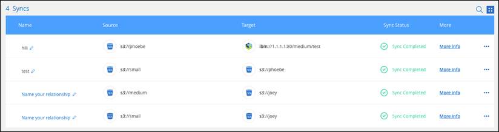

请求文档变更
请求文档变更 在 GitHub 上编辑
在 GitHub 上编辑 提供者指南
提供者指南Cloud Sync 的新增功能
了解 Cloud Sync 中的新增功能。
2022年7月3日
支持Azure Data Lake存储第2代
现在、您可以将NFS服务器或SMB服务器中的数据同步到Azure Data Lake Storage Gen2。
在创建包含Azure数据湖的同步关系时、您需要为Cloud Sync 提供存储帐户连接字符串。它必须是常规连接字符串、而不是共享访问签名(SAS)。
从Google Cloud Storage持续同步
现在支持从源Google Cloud Storage存储分段到云存储目标的持续同步设置。
初始数据同步后、Cloud Sync 将侦听源Google Cloud存储分段上的更改、并在发生更改时持续同步目标。从Google Cloud存储分段同步到S3、Google Cloud Storage、Azure Blob存储、StorageGRID 或IBM存储时、可以使用此设置。
要使用此设置、与数据代理关联的服务帐户需要以下权限：
- pubsub.subscriptions.consume
- pubsub.subscriptions.create
- pubsub.subscriptions.delete
- pubsub.subscriptions.list
- pubsub.topics.attachSubscription
- pubsub.topics.create
- pubsub.topics.delete
- pubsub.topics.list
- pubsub.topics.setIamPolicy
- storage.buckets.update全新Google Cloud区域支持
Cloud Sync 数据代理现在在以下Google Cloud地区受支持：
-
哥伦布(美国-东5)
-
达拉斯(美国-南1)
-
马德里(欧洲-西南1)
-
米兰(欧洲-西部8)
-
巴黎(欧洲-西部9)
新的Google Cloud计算机类型
Google Cloud中数据代理的默认计算机类型现在为n2-standard-4。
2022年6月6日
持续同步
通过新设置、您可以持续将源S3存储分段中的更改同步到目标。
初始数据同步后、Cloud Sync 将侦听源S3存储分段上的更改、并在发生更改时持续同步目标。无需按计划间隔重新扫描源。只有在从S3存储分段同步到S3、Google Cloud Storage、Azure Blob Storage、StorageGRID 或IBM存储时、此设置才可用。
请注意、与数据代理关联的IAM角色需要以下权限才能使用此设置：
"s3:GetBucketNotification",
"s3:PutBucketNotification"这些权限会自动添加到您创建的任何新数据代理中。
显示所有ONTAP 卷
现在、在创建同步关系时、Cloud Sync 将显示源Cloud Volumes ONTAP 系统、内部ONTAP 集群或ONTAP 文件系统上的所有卷。
以前、Cloud Sync 只会显示与选定协议匹配的卷。此时将显示所有卷、但与选定协议不匹配或没有共享或导出的任何卷都将灰显且不可选。
正在将标记复制到Azure Blob
在创建Azure Blob作为目标的同步关系时、现在可以使用Cloud Sync 将标记复制到Azure Blob容器：
-
在*设置*页面上、您可以使用*为对象复制*设置将标记从源复制到Azure Blob容器。除了复制元数据之外、还需要执行此操作。
-
在*标记/元数据*页面上、您可以指定要在复制到Azure Blob容器的对象上设置的Blob索引标记。以前、您只能指定关系元数据。
如果Azure Blob是目标、而源是Azure Blob或与S3兼容的端点(S3、StorageGRID 或IBM云对象存储)、则支持这些选项。
2022年5月1日
同步超时
现在、可以为同步关系使用新的*同步超时*设置。通过此设置、您可以定义在指定的小时数或天数内未完成数据同步时、Cloud Sync 是否应取消数据同步。
通知
现在、可以为同步关系使用新的*通知*设置。通过此设置、您可以选择是否在Cloud Manager的通知中心接收Cloud Sync 通知。您可以为成功的数据同步、失败的数据同步和已取消的数据同步启用通知。

2022 年 4 月 3 日
信息板筛选器
现在，您可以筛选 " 同步信息板 " 的内容，以便更轻松地查找与特定状态匹配的同步关系。例如，您可以筛选状态为失败的同步关系

2022 年 3 月 3 日
在信息板中排序
现在，您可以按同步关系名称对信息板进行排序。

增强了 Data sense 集成功能
在上一版本中，我们引入了 Cloud Sync 与 Cloud Data sense 的集成。在此更新中，我们简化了创建同步关系的过程，从而增强了集成能力。从 Cloud Data sense 启动数据同步后，所有源信息都包含在一个步骤中，只需输入几个关键详细信息即可。

2022 年 2 月 6 日
数据代理组的增强功能
我们通过强调数据代理 _groups_来 改变您与数据代理的交互方式。
例如，在创建新的同步关系时，您可以选择要用于该关系的数据代理 group ，而不是特定的数据代理。

在 * 管理数据代理 * 选项卡中，我们还会显示数据代理组正在管理的同步关系的数量。

2022 年 1 月 2 日
关系名称
现在，您可以为每个同步关系提供一个有意义的名称，以便更轻松地确定每个关系的用途。您可以在创建关系时以及之后的任何时间添加此名称。

S3 专用链路
在与 Amazon S3 同步数据时，您可以选择是否使用 S3 专用链路。当数据代理将数据从源复制到目标时，它将通过专用链路。
请注意，与数据代理关联的 IAM 角色需要以下权限才能使用此功能：
"ec2:DescribeVpcEndpoints"此权限会自动添加到您创建的任何新数据代理中。
Glacier 即时检索
现在，如果 Amazon S3 是同步关系中的目标，您可以选择 _Glacier 即时检索 _ 存储类。
从对象存储到 SMB 共享的 ACL
现在， Cloud Sync 支持将 ACL 从对象存储复制到 SMB 共享。以前，我们仅支持将 ACL 从 SMB 共享复制到对象存储。
SFTP 到 S3
现在，可以在用户界面中创建从 SFTP 到 Amazon S3 的同步关系。此同步关系以前仅支持 API 。
表视图增强功能
我们重新设计了信息板上的表视图，以便于使用。如果单击 * 更多信息 * ， Cloud Sync 将筛选信息板，以显示有关该特定关系的更多信息。

支持 Jarkarta 地区
Cloud Sync 现在支持在 AWS 亚太地区（雅加达）部署数据代理。
2021 年 11 月 28 日
从 SMB 到对象存储的 ACL
现在，在设置从源 SMB 共享到对象存储的同步关系时， Cloud Sync 可以复制访问控制列表（ ACL ）（ ONTAP S3 除外）。
Cloud Sync 不支持将 ACL 从对象存储复制到 SMB 共享。
更新许可证
现在，您可以更新已扩展的 Cloud Sync 许可证。
如果您延长了从 NetApp 购买的 Cloud Sync 许可证，则可以重新添加此许可证以刷新到期日期。
2021 年 10 月 31 日
创建日期设置
如果 SMB 服务器是源服务器，则可以使用名为 Date Created 的新同步关系设置来同步在特定日期之后，特定日期之前或在特定时间范围之间创建的文件。
2021 年 10 月 4 日
2021 年 9 月 2 日
支持适用于 ONTAP 的 FSX
现在，您可以将数据同步到 Amazon FSX for ONTAP 文件系统或从 Amazon FSX 文件系统同步数据。
2021 年 8 月 1 日

对象存储目标的标记
现在，在创建同步关系时，您可以在同步关系中向对象存储目标添加标记。
Amazon S3 ， Azure Blob ， Google Cloud Storage ， IBM Cloud Object Storage 和 StorageGRID 支持添加标记。

支持 Box
Cloud Sync 现在支持 "框中" 在使用 Cloud Sync API 时，作为与 Amazon S3 ， StorageGRID 和 IBM 云对象存储的同步关系中的源。
用于 Google Cloud 中数据代理的公有 IP
在 Google Cloud 中部署数据代理时，您现在可以选择是为虚拟机实例启用还是禁用公有 IP 地址。
适用于 Azure NetApp Files 的双协议卷
在为 Azure NetApp Files 选择源卷或目标卷时，无论您为同步关系选择哪种协议， Cloud Sync 现在都会显示双协议卷。
2021 年 7 月 7 日
支持 HashiCorp 存储
现在，您可以通过使用 Google Cloud 服务帐户进行身份验证来设置数据代理，以便从外部 HashiCorp Vault 访问凭据。
为 S3 存储分段定义标记或元数据
现在，在设置与 Amazon S3 存储分段的同步关系时，您可以通过同步关系向导定义要保存在目标 S3 存储分段中对象上的标记或元数据。
标记选项以前是同步关系设置的一部分。
2021 年 6 月 7 日
Google Cloud 中的存储类
如果 Google Cloud Storage 存储分段是同步关系中的目标，您现在可以选择要使用的存储类。Cloud Sync 支持以下存储类：
-
标准
-
近线
-
冷线
-
归档
2021 年 5 月 2 日
比较属性
现在，每个同步关系都有一个新的 * 比较依据 * 设置。
通过此高级设置，您可以选择 Cloud Sync 在确定文件或目录是否已更改并应重新同步时是否应比较某些属性。
2021 年 4 月 11 日
独立 Cloud Sync 服务已停用
独立的 Cloud Sync 服务已停用。现在，您应直接从 Cloud Manager 访问 Cloud Sync ，在 Cloud Manager 中，所有相同的特性和功能均可用。
登录到 Cloud Manager 后，您可以切换到顶部的 " 同步 " 选项卡并查看您的关系，就像以前一样。
Google Cloud 分段用于不同项目
在设置同步关系时，如果您为数据代理的服务帐户提供了所需的权限，则可以从不同项目中的 Google Cloud 存储分段中进行选择。
Google Cloud Storage 和 S3 之间的元数据
现在， Cloud Sync 可在 Google 云存储和 S3 提供程序（ AWS S3 ， StorageGRID 和 IBM 云对象存储）之间复制元数据。
重新启动数据代理
现在，您可以从 Cloud Sync 重新启动数据代理。

未运行最新版本时的消息
现在， Cloud Sync 可以确定数据代理何时未运行最新软件版本。此消息有助于确保您获得最新的特性和功能。